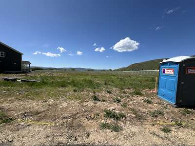
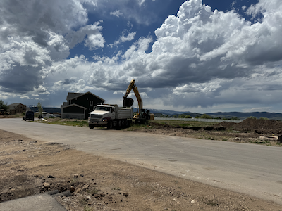

Progress
Check back here on Monday of each week for an update on our home construction!
Weekly Index
Friday, May 31, 2024
The lot has been staked, as have the two lots next to us! We are told that the foundation will be dug next week. They've also added a porta potty! Our yard will be small, but the Uintas are right next door and the house will be beautiful, so we don't mind. Plus we'll have the neighborhood ponds and green space across the street. I am a little nervous about the sizes of the neighbors' houses, which go back farther than I thought was allowed, but we won't be able to see them from our back deck anyway.
Friday, June 7, 2024
Digging has begun on the two lots next to ours, and ours will be next! It will be interesting to see how the timeline will be impacted by them building three houses at once. Hopefully that speeds things up as the subs will have a long-term commitment. Can't wait to come up next week to see our hole!
